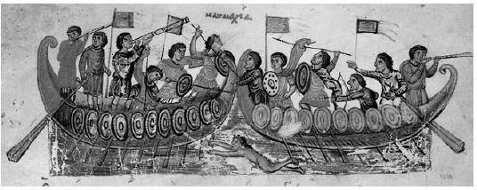

Для педантов сразу же оговоримся: делать какие-либо содержательные выводы по любым техническим вопросам на основе анализа ПЕРЕВОДА текста первоисточника с языка оригинала на любой другой язык – занятие бесперспективное. Так же как и судить о качестве перевода по степени технической его точности.
А теперь к сути вопроса.
В литературе, посвященной тактике морского боя с участием галер и их античных предшественников, неоднократно указывалось, что суда гребного флота должны вступать в бой или сражение без парусов, только на веслах. Нарушение этого принципа приводило к тяжелым последствиям.
Обычай убирать паруса перед боем существовал с античных времен. Упоминание об этом встречается, в частности, у Полибия. Полибий обладал значительным военным опытом - это и делает столь ценными его сведения о различных сражениях. Важное значение имеет и наличие у Полибия некоторого практического опыта мореплавания. (См. об этом Самохина Г.С. Полибий. Эпоха, судьба, труд. СПб. 1995.)
В тексте «Всеобщей истории», (Т. I. М. Издательство АСТ. 2004 г.) … в «классическом», как указано в редакторской аннотации, переводе Ф.Г.Мищенко при описании морского сражения при Эгатских островах (241 г. до н.э.) мы читаем:
«Когда карфагеняне увидели, что дальнейший путь им отрезан римлянами, они убрали паруса и, находясь на своих кораблях, ободряли друг друга и начали битву» И далее, при описании отхода остатков карфагенского флота: «Остальной флот с распущенными парусами под попутным ветром отступил к острову Гиере; на их счастье ветер неожиданно переменился и вовремя помог им».
В этом отрывке я курсивом выделил те части текста, перевод которых, на мой взгляд, оставаясь достаточно гладким, с технической точки зрения представляется неточным. В подлиннике первое из приведенных предложений выглядит следующим образом: ρον κατέστησε τοῖς πολεμίοις τὸν στόλον. οἱ δὲ Καρχηδόνιοι κατιδόντες τὸν διάπλουν αὐτῶν προκατέχοντας τοὺς Ῥωμαίους, καθελόμενοι τοὺς ἱστοὺς
У древних греков, в частности у Гомера, глагол καθαιρέω (опускать, класть) используется и в смысле «убирать паруса»: “καθείλομεν ἱστία” ( Od. 9.149;) Но в данном случае речь идет о мачтах (ἱστός - histos). Выражение καθελόμενοι τοὺς ἱστοὺς, если говорить современным языком, можно перевести соответствующей формой выражения «рубить рангоут», т.е. убирать мачту.
Когда после неудачного для себя сражения карфагеняне вынуждены были отходить, то они сделали это, естественно, как и указано в тексте перевода Ф.Г.Мищенко, «с распущенными парусами». В подлиннике в этом месте сказано: …τὸ δὲ λοιπὸν πλῆθος ἐπαράμενον τοὺς ἱστοὺς καὶ κατουρῶσαν αὖθις ἀπεχώρει πρὸς τὴν Ἱερὰν νῆσον… Как и в предыдущем случае глагол ἐπαίρω, означающий «поднимать», может использоваться в выражении «поднимать паруса» (ἐπαιρόμενα ἱστία( Plu.Luc.3)) , но в данном случае речь идет о воодружении на свои места мачт: ἐπαράμενον τοὺς ἱστοὺς.
Кстати, О.Жаль в своей «Морской археологии» неоднократно и каждый раз очень эмоционально рассказывает о том, как неточность перевода, иногда просто невнимание при переводе, вводило в заблуждение даже крупных специалистов.
Другим источником сведений по рассматриваемой нами проблеме является знаменитый труд Тита Ливия "От основания Города". Он был создан значительно позже, чем сочинение Полибия, в конце I в. до н.э. - начале I в. н.э. Тит Ливий пишет: Quod ubi vidit Romanus, vela contrahit, malosque inclinat, etc. (Кн. XXXVI, гл. XLIV.) «…И всякий раз, когда видели римский корабль, убирали паруса и опускали мачту…»
Неоднократно о такой практике пишет в своих работах и Огюстен Жаль. В частности, в очерке «Флот Цезаря» (A.Jal. “La flotte de Cesar” в сборнике Etudes sur la Marine Antique (Paris, 1861, c.29-238) он характеризует этот прием следующим образом: «Обычно античные моряки перед боем подтягивали к реям и закрепляли паруса, рубили мачты, оставляя их основание над отверстием пяртнерса. Так поступали для того, чтобы суметь быстро поднять их в исходное положение и укрепить, если в случае неудачи приходилось уходить под парусами. Мачты оставались на своем месте до самого начала боя, чтобы экономить силы гребцов, роль которых в бою очень важна». Мы видим, что это описание полностью соответствует ситуации, о которой поведал нам Полибий.
Косвенным подтверждением того, что паруса античных гребных судов перед боем убирали, а мачты рубили, служит следующий факт, на который обратил внимание А. Карто (Сartault А. LA TRIÈRE ATHENIENNE (1881)): практически не сохранилось изображений военных триер с полным парусным вооружением. Так как на монументах в основном изображались корабли во время сражений, то из всех парусов они несли только маленький вспомогательный фок на наклоненной вперед мачте, предназначенный для выхода из боя. Ни основной мачты, ни ее паруса мы не видим.
Практика рубить рангоут перед боем сохранилась и в Средние века. Об этом, в частности, упоминается в «The Oxfrod Dictionary of Byzantium» в статье Dromon: «In combat their sails were furled and the masts lowered».В качестве иллюстрации этого положения приводится ссылка на изображение морского боя из рукописи XI века Kynēgetica Псевдо-Оппиана, находящейся в Венецианской библиотеке Marciana (MS. Gr. 479 [coll. 881], fol. 23r).

Хорошо известным примером того, что может произойти, если рангоут галер не рубили перед боем, является поражение численно превосдящего венецианского флота (68 галер) в сражении с небольшой эскадрой генуэзцев при Айясе (Лаяццо) в 1294 г. Айяс – порт на побережье Средиземного моря в Киликии (совр. Юмурталык, Турция). (Некоторые исследователи считают, что именно в этом бою попал в плен знаменитый путешественник Марко Поло.) То ли вследствие излишней самоуверенности, то ли из-за недостатка времени, но венецианцы не убрали перед боем паруса и мачты, в то время как на галерах генуэзцев все было сделано в соответствии с многовековой традицией. При сближении кораблей неожиданно подул встречный для венецианцев ветер, который развернул их галеры лагом к противнику. Венецианцы потеряли возможность использовать оружие («механическую артиллерию»), которое располагалось в носовой части галер. Кроме того, вынужденный переход из строя фронта при небольшой дистанции между флангами в колонну привел к тому, что из соприкосновения с противником вышло примерно половина кораблей эскадры венецианского адмирала Марко Баседжио. Генуэзцы получили почти двойное превосходство и одержали важнейшую для себя победу. Баседжио был убит, венецианцы потеряли 25 своих галер.
Справедливости ради следует сказать, что генуэзцы плохо использовали полученный ими положительный опыт. В морском сражении генуэзского флота против объединенных сил Венеции и Арагона при Alghero в Сардинии в 1353 году при схождении эскадр, построенных в линии фронта, порыв свежего ветра нарушил строй генуэзцев, позволив союзникам разбить их превосходящие силы «по очереди». Правда, генуэзский адмирал Паганино Дориа, одержавший до этого блистательную победу над флотом коалиции во главе с Венецией, в результате интриг был смещен и командование флотом было передано представителю семейства Гримальди – Антонио Гримальди. Новый командующий был направлен во главе эскадры из 59 галер для снятия блокады с принадлежавшего генуэзцам сардинского порта Alghero (Alguiero), которую держал флот арагонцев в составе 22 галер под командованием адмирала Бернардо де Кабрера. При приближении противника арагонцы убрали паруса и построились в плотный строй фронта. Генуэзцы, заранее уверенные в победе над незначительными силами противника, не приняли необходимых мер для надлежащей подготовки к бою, в результате чего их авангард вошел в соприкосновение с арагонцами раньше, чем подошли центр и арьегард, и был разгромлен. Та же участь постигла и центр генуэзцев. Разгром эскадры Гримальди был завершен подошедшей на помощь арагонцам эскадрой венецианцев в составе 50 галер.
Галеры – это гребные корабли и тактика их использования должна была учитывать это. Во время боя корабли должны быть готовы к быстрому маневру, который диктуется обстоятельствами, а не зависеть от капризов ветра.
И все же военно-морское искусство потому и называется искусством, что все правила ведения боевых действий на море следует применять творчески. Касаясь затронутой нами сегодня темы нельзя не привести пример военной хитрости, которую применил генуэзский адмирал Оберто Дориа в сражении при Мелории (1284 г.). Не убрав паруса на части своих кораблей, он ввел в заблуждение флотоводцев пизанской эскадры, которые решили , что галеры Дориа – это суда обеспечения, которые не собираются вступать в бой. Эта ошибка была роковой для флота Пизы. После поражения при Мелории пизанцы уже не смогли оправиться, что и привело в дальнейшем к падению влияния Пизы в Средиземноморье и в конечном счете – к ее захвату Флоренцией.
Лионел Кассон высказывает предположение, что перед боем рубили рангоут только на кораблях с прямым парусным вооружением. Он, в частности, пишет: «The ships carried two masts, sometimes three, and, in the later centuries at least, these were fitted with lateen sails. Since this rig is light and easy to handle, the sails were carried during battle and not left ashore as had been the practice previously». (Casson The Ancient Marines (1959), p.243-244). Этот вопрос мы обсудим ниже.
И в заключение несколько слов о том, как рубили рангоут на казацких чайках на Днепре. Пишет об этом французский инженер Боплан, побывавший у запорожцев (цитируется по книге А.С.Широкорад «Русские пираты» (М.Вагриус, 2007)):
«В устье Днепра обыкновенно держат свои галеры турки, чтобы не пропустить казаков, но последние выбирают темную ночь во время новолуния и прокрадываются через камышовые заросли. … Если случится им встретить галеры или другие корабли, они поступают так. Чайки их поднимаются над водой только на 2,5 фута (0,75 м), поэтому они всегда раньше замечают корабль противников, чем те заметят их. Увидев, они опускают мачту, заходят с запада и стоят так до полночи, стараясь только не упустить из виду корабля. В полночь гребут изо всей силы к кораблям, и половина их готовится к бою, чтобы, причалив к кораблю, броситься на абордаж.
Неприятели видят, как их внезапно окружают 80–100 лодок, казаки быстро наполняют и захватывают корабль. Завладев им, они забирают деньги и удобоперевозимые вещи, также пушки и все, что не боится воды, а сами корабли вместе с людьми топят».О некоторых технических вопросах, относящихся к рассмотренному сегодня вопросу, поговорим в следующий раз.